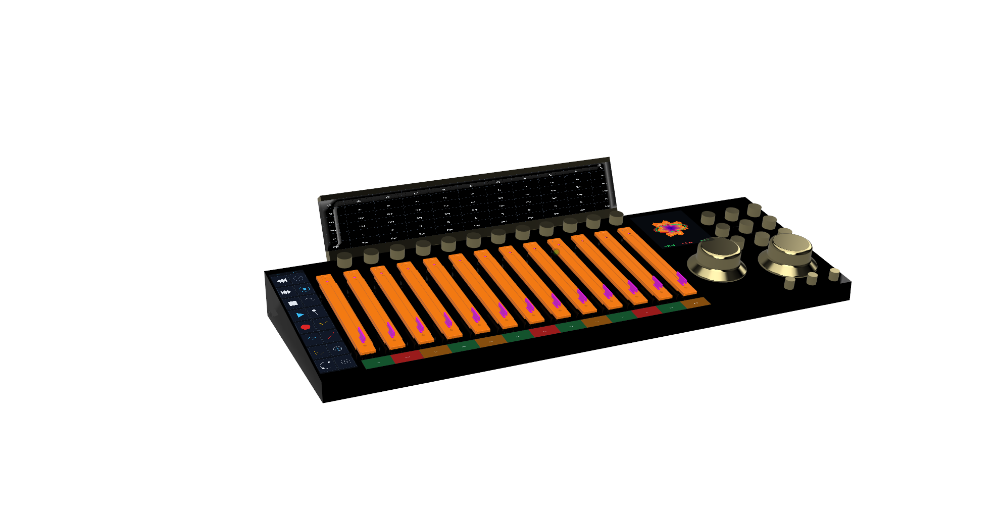

GIG Console
One surface for rehearsal, studio, and live.
Console is the tactile command layer for GIG. It manages transport, faders, monitoring, stage focus, and the 6-DOF edit control across the entire ecosystem.
6-DOF Editing
SpaceMouse-style selection and adjustment from one hand position.
Less Switching
Fewer plugin windows, disconnected knobs, and menu jumps.
Whole Session
Rehearsal, recording, mix review, playback, and Venue operation.
Analog Recall
Digital control of analog and hybrid sound-shaping paths.
Why It Matters
Console is not just a DAW controller. It is the shared physical language for GIG, so a musician or operator can move from practice to recording to live playback without learning separate tools.
System Role
Console sits after the musician Rigs, Cube, Racks, and Venue as the unifying command surface: the one place where the ecosystem becomes playable.